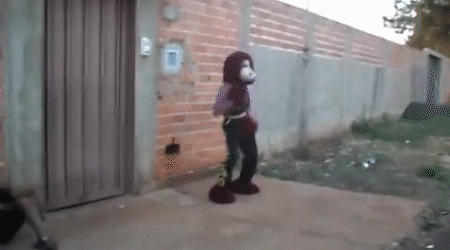

Fofão
Fofão is the most famous one.
To have the role of Fofão is the highest point in the career of dancers of Carreta Hurricane. "It's like any business: he wants to go up? Have to do to deserve it", said Renan, the newest Clown of the group.
According Orival Pessini, the creator of Fofão, Carreta Hurricane never asked permission to use the character.
Pessini do not like the generic version of the Fofão Carreta Hurricane and other train sets.
"My creation was just to entertain kids on TV, I don't know how people deal with this, he dances like a God. (...) I never imagined my creation being used like this, but you can not control everything", said the creator of Fofão to UOL.
However, not always this hero is perfect, sometimes climbing a wall can be tricky. Unaware of the limits of physics and the human body, this Fofão was forced to perform an extreme climbing. Malicious children with the devil in their bodies induced poor Fofão to climb a wall. Shamelessly, these children forgot to respect the dignity of this noble Fofão. Unfortunately Fofão ate too much at lunch and failed to make exact calculations for the long-awaited climbing... Which resulted in this:
Some say he died a few times, but always comes back to group because he has pact with Satan.
He is the most loved, but we all know that in his spare time he works as a thief because he always shows his skills to climb walls and climb buildings, thus making the role of Spiderman, which is extinct in the group, and the motto of Fofão is, no matter if it dropped or bumped into someone, the first thing to do is continue to dance.
He falls and stands all time because he is FOFÃO!
Go straight ahead, look to the side